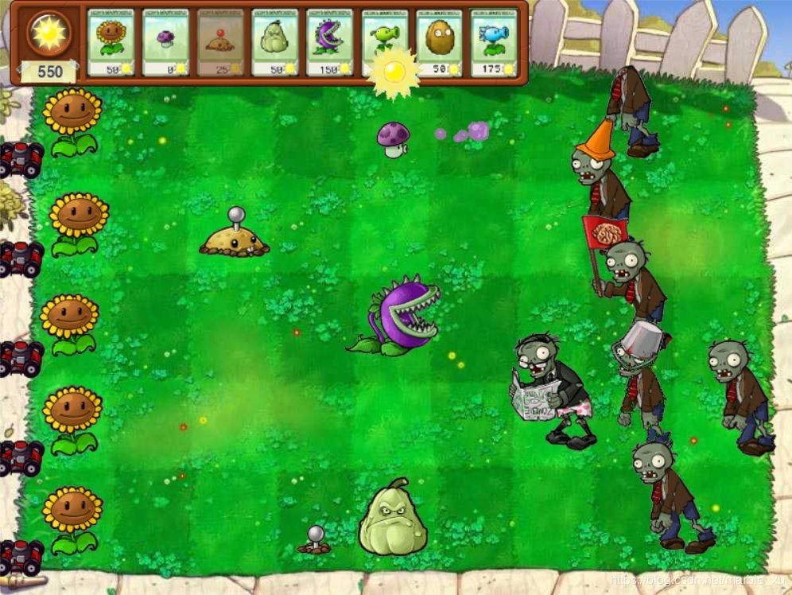
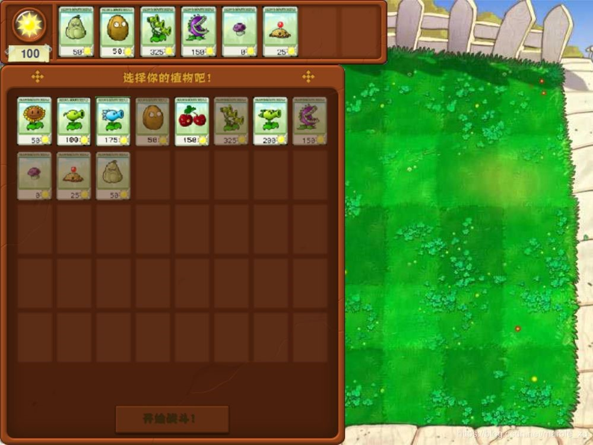
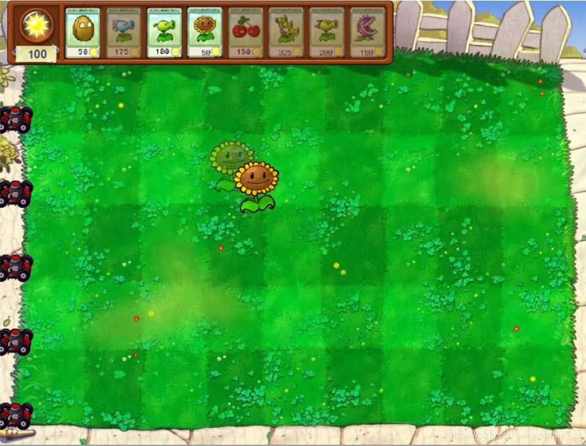

Python小游戏 植物大战僵尸
小组成员：大数据174余崇富，大数据174张炜辉，大数据174刘科良
指导老师：刘兰华
引入需要的模块，配置图片路径，设置界面宽高背景颜色，创建游戏主入口
1.游戏支持以下功能
(1)支持太阳花，豌豆射手，寒冰射手，坚果，樱桃炸弹，双重豌豆射手，
三重豌豆射手，食人花 ，小喷菇，土豆地雷，倭瓜等植物类型。
(2)支持普通僵尸，棋子僵尸，路障僵尸，铁桶僵尸。,增加读报僵尸等僵尸类型。
(3)使用json文件保存关卡信息，可以设置僵尸出现的时间和位置。
(4)每关开始时可以选择上场植物。
(5)有除草机。
2.部分游戏截图
(1)游戏界面的植物和僵尸

(2)关卡开始可以选择道具

(3)可以选择植物种植位置

3.关键代码说明
(1) menubar.py，有植物各种信息，这个文件包含以下功能模块:
list列表，用于保存所有的植物卡片的名称和属性，每个植物用单独的list保存， 每个
list index都对应一种植物，其中card_name_list[0] 是太阳花卡片的名字，用 来获取太阳
花卡片的图片；plant_name_list[0] 是太阳花的名字，用来获取太阳花 卡片的图片；
plant_sun_list[0] 是种植太阳花需要花费的太阳点数；plant_frozen_time_list[0] 是太阳
花的冷却时间。
Card类，用于显示植物，每个植物卡片单独的类，这些类包含下面3个主要功能函数：
checkMouseClick函数，判断鼠标是否点击到这个卡片；canClick函数，判断这个卡片是否能种
植（有没有足够的点数，是否还在冷却时间内）；update 函数，通过设置图片的透明度来表示
这个卡片是否能选择。
MenuBar类，用来显示游戏界面中的植物卡片栏。主要有两个参数和两个功能函数：
self.sun_value：当前采集的太阳点数；self.card_list: 植物卡片的list；setupCards函数：
遍历初始化__init__函数中传入这个关卡选好的植物卡片list，依次创建Card类，设置每个卡
片的显示位置；checkCardClick函数：检查鼠标是否点击了卡片栏上的某个植物卡片，如果选
择了一个可种植的卡片，返回结果。 MenuBar类，用来显示游戏界面中的植物卡片栏。
主要有两个参数和两个功能函数：self.sun_value：当前采集的太阳点数；self.card_list:
植物卡片的list；setupCards函数：遍历初始化__init__函数中传入这个关卡选好的植物卡片list
，依次创建Card类，设置每个卡片的显示位置；checkCardClick函数：检查鼠标是否点击了卡片栏
上的某个植物卡片，如果选择了一个可种植的卡片，返回结果。
(2) level.py，主要是setupMouseImage 函数，实现鼠标图片切换为选中的植物，函数关键参数如下：
self.mouse_image ：根据 plant_name 获取选中的植物图片；self.mouse_rect：选中植物图片的位置，
在drawMouseShow函数中，需要将植物图片的位置设置成当前鼠标的位置；pg.mouse.set_visible(False)：
隐藏默认的鼠标显示，这样效果就是鼠标图片切换为选中的植物了。此外这个文件还有canSeedPlant 函数
用来判断当前鼠标位置能否种植物，setupHintImage 函数，如果当前鼠标位置能种植物，且有选择了一个
植物卡片，则设置self.hint_image 显示当前会在哪一个方格中种植物，self.hint_rect 是植物种的坐标位置。
(3) map.py中有map类，用来生成植物所在的方格，这个文件的主要参数和功能函数如下：self.map，二维list，
用来保存每个方格的状态。每个entry初始化为 0, 表示可以种植物，值为1时表示这个方格已经种了植物；getMapIndex 函数，
传入参数是游戏中的坐标位置（比如当前鼠标的位置），返回该位置在地图的哪个方格中；getMapGridPos 函数，传入一个方
格的index，返回在该方格中种植物的坐标位置；showPlant 函数，根据传入的坐标位置，判断该位置所在的方格是否能种植物，
如果能种，就返回返回在该方格中种植物的坐标位置。